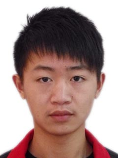

I am currently an assistant researcher of National University of Defense Technology .
News
- [2/2025] One paper titled ‘‘Decentralized Riemannian natural gradient methods with Kronecker-product approximations’’ is accepted by Journal of the Operations Research Society of China.
- [2/2025] One paper titled ‘‘LDPP-MIG Detectors in Sample-Starved Nonhomogeneous Clutter’’ is accepted by IEEE Transactions on Aerospace and Electronic Systems.
- [1/2025] One paper titled ‘‘An Augmented Lagrangian Primal-Dual Semismooth Newton Method for Multi-block Composite Optimization’’ is accepted by Journal of Scientific Computing.
- [12/2024] One paper titled ‘‘Decentralized projected Riemannian stochastic recursive momentum method for nonconvex optimization’’ is accepted by AAAI 2025, Poster.
- [9/2024] One paper titled ‘‘Decentralized Douglas-Rachford splitting methods for smooth optimization over compact submanifolds’’ is accepted by Journal of Computational Mathematics.
- [5/2024] One paper titled ‘‘New vector transport operators extending a Riemannian CG algorithm to generalized Stiefel manifold with low-rank applications’’ is accepted by Journal of Computational and Applied Mathematics.
- [2/2024] One paper titled ‘‘A projected semismooth Newton method for a class of nonconvex composite programs with strong prox-regularity’’ is accepted by Journal of Machine Learning Research.